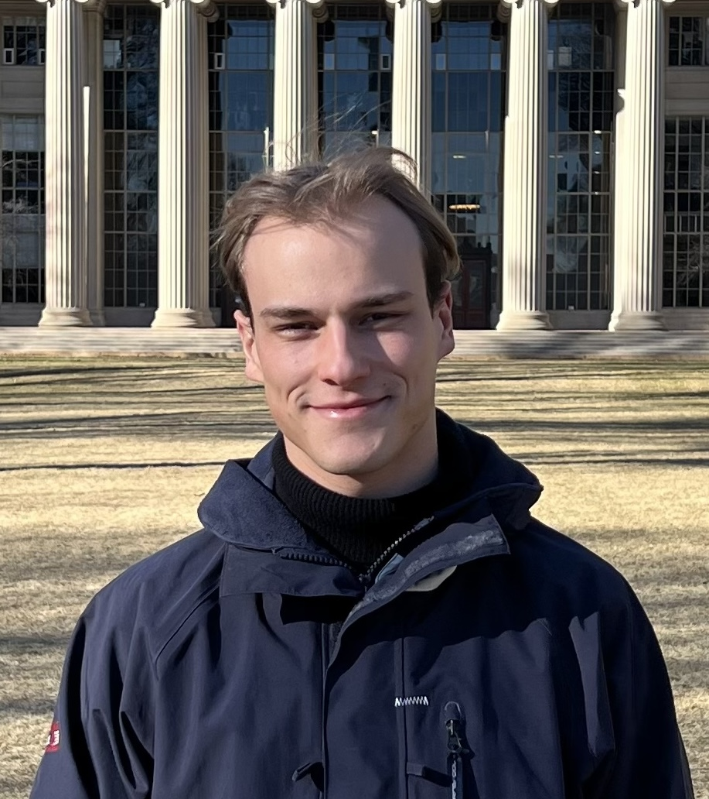

MSc Thesis: Quality-Ranked Training on Easy Reasoning Problems
Going beyond the RLVR paradigm for training math reasoning models. At SRI, ETH Zurich with Jasper Dekoninck and Prof. Martin Vechev.

I'm currently building something new.
Previously, I studied at ETH
Zurich and  MIT, graduating with an MSc in Data Science (minor in Robotics). My thesis was advised
by Prof. Martin
Vechev at SRI. I've also worked at
QuantCo on statistical models for insurance. Before
that I joined Swissloop to build vehicle control and sensors for the future of transportation.
I've long been drawn to where learning systems meet the physical world, especially reinforcement learning
and robotics, and I care most about using them to build things that matter.
Outside of work, I like running marathons and cooking.
MIT, graduating with an MSc in Data Science (minor in Robotics). My thesis was advised
by Prof. Martin
Vechev at SRI. I've also worked at
QuantCo on statistical models for insurance. Before
that I joined Swissloop to build vehicle control and sensors for the future of transportation.
I've long been drawn to where learning systems meet the physical world, especially reinforcement learning
and robotics, and I care most about using them to build things that matter.
Outside of work, I like running marathons and cooking.
Going beyond the RLVR paradigm for training math reasoning models. At SRI, ETH Zurich with Jasper Dekoninck and Prof. Martin Vechev.
RL framework for the Petrol Station Replenishment Problem with Arqh.ai.
Latent Program Networks for explicit meta-optimization, inspired by ARC-AGI.
Certifying neural networks for Reliable and Trustworthy AI, ETH Zurich.
Recurrent PPO in JAX for multi-agent RL. Research at MIT, Prof. Daniela Rus' lab.